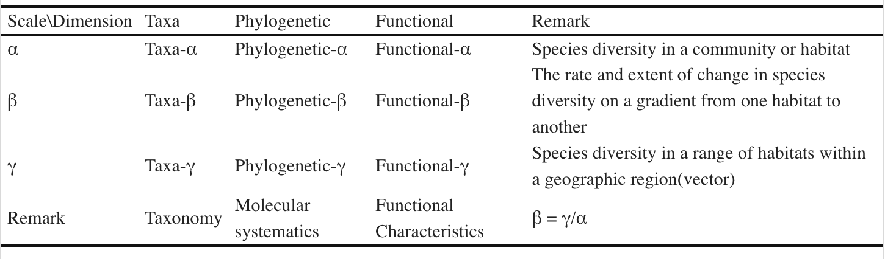

| Metric | Description |
|---|---|
| Richness | The total number of different species observed in a sample. |
| Chao1 | An estimator of species richness that takes into account the number of rare species observed and extrapolates the total species richness of the community. |
| ACE | Abundance-based Coverage Estimator (ACE) estimates species richness by accounting for the abundance distribution of species in a sample. |
| GC | The Gini coefficient measures the evenness of species abundance distribution in a community. |
| Shannon | Shannon diversity index considers both species richness and evenness of species abundance in a community. Higher values indicate greater diversity. |
| Simpson | Simpson diversity index measures the probability that two randomly selected individuals in a community belong to the same species. Lower values indicate greater diversity. |
| PD | Phylogenetic Diversity (PD) measures the amount of evolutionary history represented by species in a community. |
| Pielou | Pielou's evenness index assesses how evenly the individuals in a community are distributed among the species present. Higher values indicate greater evenness. |
4 Diversity analysis
For more details on diversity analysis, you can refer to Theories and methods of species diversity research

4.1 α-diversity
Calculate a_diversity of otutab then link to experiment group or environment variable:
4.2 β-diversity
Distance
Firstly, we should understand the dissimilarity indices for community. The vegan::vegdist() function provides a wide range of distance metrics based on abundance calculations. Additionally, there are distance metrics that incorporate phylogenetic data such as “unifrac,” “beta_mpd,” “beta_mntd,” and “phylosor,” all integrated into the mat_dist function.
| Distance.Coefficient | Description |
|---|---|
| Manhattan | Manhattan distance calculates the sum of absolute differences between coordinates in each dimension. It is suitable for data with categorical variables or attributes. |
| Euclidean | Euclidean distance calculates the straight-line distance between two points in a multidimensional space. It is commonly used when data are continuous and have no categorical attributes. |
| Canberra | Canberra distance is a weighted version of Manhattan distance that emphasizes the importance of small differences between coordinates. It is often used for ecological data analysis. |
| Clark | Clark distance measures the proportion of non-zero attributes that are different between two samples. |
| Bray | Bray distance calculates the dissimilarity between two samples based on the sum of absolute differences in abundances. |
| Kulczynski | Kulczynski distance measures the similarity between two samples based on the arithmetic mean of proportions of common attributes. |
| Jaccard | Jaccard distance measures dissimilarity between two samples based on the proportion of unique attributes. It is commonly used in ecology for binary data. |
| Gower | Gower distance is a generalization of Manhattan distance for mixed data types, including categorical and continuous variables. |
| AltGower | AltGower distance is an alternative form of Gower distance that uses an alternative method to standardize continuous variables. |
| Morisita | Morisita distance measures dissimilarity between two samples based on the frequency of shared attributes, with emphasis on rare attributes. |
| Horn | Horn distance measures dissimilarity between two samples based on the geometric mean of proportions of shared attributes. |
| Mountford | Mountford distance measures dissimilarity between two samples based on the reciprocal of the arithmetic mean of proportions of shared attributes. |
| Raup | Raup distance measures dissimilarity between two samples based on the probability of shared attributes. |
| Binomial | Binomial distance measures dissimilarity between two samples based on the probability of observing shared attributes. |
| Chao | Chao distance is a modification of Jaccard distance that adjusts for undersampling of rare species. |
| Cao | Cao distance is a modification of Chao distance that incorporates species abundance information. |
| Mahalanobis | Mahalanobis distance measures the distance between two samples in multidimensional space, accounting for correlation between variables. |
| Chisq | Chisq distance calculates the dissimilarity between two samples based on the chi-squared distance between categorical variables. |
| Chord | Chord distance calculates dissimilarity between two samples based on the angles between points in multidimensional space. |
| Hellinger | Hellinger distance measures dissimilarity between two samples based on the square root of the sum of squared differences in square root-transformed abundances. |
| Aitchison | Aitchison distance is a transformation of compositional data that allows for Euclidean distance calculation in log-ratio space. |
| Robust Aitchison | Robust Aitchison distance is a robust version of Aitchison distance that reduces the influence of outliers in the data. |
| Unifrac | Unifrac distance measures dissimilarity between microbial communities based on evolutionary distances in a phylogenetic tree. |
| Beta MPD | Beta MPD (Mean Phylogenetic Distance) measures the phylogenetic diversity between two communities based on the mean phylogenetic distance of species pairs. |
| Beta MNTD | Beta MNTD (Mean Nearest Taxon Distance) measures the phylogenetic turnover between two communities based on the mean nearest taxon distance. |
| Phylosor | Phylosor distance measures the dissimilarity between communities based on the proportion of shared branches in a phylogenetic tree. |
dist1 <- mat_dist(otutab, method = "bray")
dist1
## NS1 NS2 NS3 NS4 NS5 NS6 WS1
## NS2 0.2965660
## NS3 0.3323402 0.3751370
## NS4 0.2855628 0.3480858 0.3022878
## NS5 0.3165963 0.4463875 0.2980537 0.2942927
## NS6 0.2434597 0.3109617 0.2983203 0.2508816 0.2999133
## WS2 WS3 WS4 WS5 WS6 CS1 CS2
## NS2
## NS3
## NS4
## NS5
## NS6
## CS3 CS4 CS5
## NS2
## NS3
## NS4
## NS5
## NS6
## [ reached getOption("max.print") -- omitted 12 rows ]
hclust(dist1) %>% plot()Transform the dist object to b_dist object, which is more readable and easy to plot.
as.b_dist(dist1, group_df = metadata["Group"]) -> b_dist1
head(b_dist1, n = 10)
## name1 name2 dis group1 group2 variable group
## 1 NS2 NS1 0.2965660 NS NS NS intra
## 2 NS3 NS1 0.3323402 NS NS NS intra
## 3 NS4 NS1 0.2855628 NS NS NS intra
## 4 NS5 NS1 0.3165963 NS NS NS intra
## 5 NS6 NS1 0.2434597 NS NS NS intra
## 6 WS1 NS1 0.3201161 WS NS NS_WS inter
## 7 WS2 NS1 0.3646047 WS NS NS_WS inter
## 8 WS3 NS1 0.3480162 WS NS NS_WS inter
## 9 WS4 NS1 0.2967074 WS NS NS_WS inter
## 10 WS5 NS1 0.2889362 WS NS NS_WS interWe can also relate the distances between samples in the abundance table to other distances, such as the actual geographical distances of sampling, to observe if there is a pattern of decreasing similarity with geographical distance:
metadata[, c("lat", "long")] -> geo
geo_sim(otutab, geo) -> geo_res
my_lm(geo_res[4], "dis.geo", geo_res) + labs(x = "Distance(km)", y = "1-bray")Ordination analysis
There are a range of dimensionality reduction methods available for analysis, including Constrained and non-Constrained. For more details, you can refer to Dimension reduction/ordination analysis
| Short | Name | Description |
|---|---|---|
| PCA | Principal Component Analysis (PCA) | PCA is a linear technique used to reduce the dimensionality of the data by transforming it into a new coordinate system aligned with the directions of maximum variance. It captures the most significant patterns in the data. |
| PCoA | Principal Coordinates Analysis (PCoA) | PCoA is a method similar to PCA, but it operates on distance or dissimilarity matrices, making it suitable for analyzing ecological or genetic data. It visualizes relationships between samples based on their pairwise dissimilarities. |
| CA | Correspondence Analysis (CA) | CA is used to explore relationships between categorical variables in a dataset. It reduces the dimensionality of the data and projects variables onto a lower-dimensional space while preserving the relationships between them. |
| DCA | Detrended Correspondence Analysis (DCA) | DCA is a variation of CA designed for ecological data. It is particularly useful for exploring species-environment relationships in community ecology and visualizing gradients in species composition. |
| NMDS | Non-metric Multidimensional Scaling (NMDS) | NMDS is a nonlinear method for dimensionality reduction that preserves the rank order of distances between samples. It is commonly used in ecology to visualize dissimilarities or distances between samples. |
| PLS-DA | Partial Least Squares Discriminant Analysis (PLS-DA) | PLS-DA is a supervised dimensionality reduction technique used in classification problems. It identifies latent variables that maximize the separation between predefined classes in the data. |
| t-SNE | t-distributed Stochastic Neighbor Embedding (t-SNE) | t-SNE is a nonlinear dimensionality reduction technique that focuses on preserving local structure in the data. It is commonly used for visualizing high-dimensional data in a lower-dimensional space. |
| UMAP | Uniform Manifold Approximation and Projection (UMAP) | UMAP is a state-of-the-art nonlinear dimensionality reduction method known for its ability to preserve both local and global structure in high-dimensional data. It is effective for visualizing complex datasets. |
| LDA | Linear Discriminant Analysis (LDA) | LDA is a supervised dimensionality reduction technique used for classification tasks. It finds the linear combinations of features that best separate different classes in the data. |
Like PCA, PCoA, NMDS, RDA, CCA… For example:
PCA:
b_analyse(otutab, method = "pca") -> b_res
plot(b_res, "Group", metadata, bi = T, rate = 0.5)
plot(b_res, "Group", metadata, mode = 3)
b_analyse(otutab, method = "pca", ndim = 3) -> b_res
b_res_3d(b_res, "Group", metadata)
## $PCARDA:
env <- metadata[, 6:10]
# RDA
myRDA(otutab, env) -> phy.rda
##
## Call:
## vegan::decorana(veg = dat.h)
##
## Detrended correspondence analysis with 26 segments.
## Rescaling of axes with 4 iterations.
## Total inertia (scaled Chi-square): 0.3192
##
## DCA1 DCA2 DCA3 DCA4
## Eigenvalues 0.03142 0.02276 0.01927 0.017818
## Additive Eigenvalues 0.03142 0.02276 0.01927 0.017881
## Decorana values 0.03169 0.02142 0.01511 0.009314
## Axis lengths 0.73929 0.72605 0.52357 0.666913
##
## DCA analysis, select the sorting analysis model according to the first value of the Axis lengths row
## Axis Lengths >4.0-CCA (based on unimodal model, canonical correspondence analysis);
## If it is between 3.0-4.0 - both RDA/CCA;
## If less than 3.0-RDA (based on linear model, redundancy analysis)
## [1] "===============Initial Model================"
## [1] "Initial cca, vif>20 indicates serious collinearity:"
## env4 env5 env6 lat long
## 2.574997 2.674671 1.252002 1.381839 1.211392
## Initial Model R-square: 0.04828743
## [1] "=============Statistics==========="
## 0.3282029 Constrained indicates the degree to which environmental factors explain differences in community structure
## 0.6717971 unconstrained means that the environmental factors cannot explain the part of the community structure
RDA_plot(phy.rda, "Group", metadata)To assess the impact and significance of environmental factors on the abundance table, you can utilize statistical tests such as PERMANOVA (Permutational Multivariate Analysis of Variance) with methods like “adonis,” “anosim,” “mrpp,” or “mantel”. Alternatively, you can employ the “envfit” function for testing.
| Method | Description |
|---|---|
| Adonis | A permutation-based multivariate analysis of variance (PERMANOVA) method used to test for significant differences in multivariate data sets across different groups or treatments. |
| Anosim | Analysis of Similarities is a non-parametric method for testing the significance of differences between groups of samples based on dissimilarity matrices. |
| MRPP | Multi-response Permutation Procedure is a permutation-based method for testing significant differences in multivariate data sets, similar to Anosim but utilizing a different test statistic. |
| Mantel | A statistical method used to assess the correlation between two distance or dissimilarity matrices, often used to examine the relationship between community dissimilarities and environmental distances. |
| Envfit | A function used to fit environmental variables onto ordination plots, assessing the significance and strength of the relationship between environmental variables and sample ordinations using permutation tests. |
permanova(otutab, env, method = "adonis") -> adonis_res
sanxian(adonis_res)
envfitt(phy.rda, env) -> envfit_res
plot(envfit_res)| group | r2 | p_value | sig |
|---|---|---|---|
| env4 | 0.116 | 0.001 | TRUE |
| env5 | 0.097 | 0.002 | TRUE |
| env6 | 0.060 | 0.406 | FALSE |
| lat | 0.058 | 0.463 | FALSE |
| long | 0.053 | 0.756 | FALSE |
We can also utilize Mantel tests to assess the correlation between abundance tables and environmental factors, and create this elegant visualization (integrating correlation heatmaps and network plots):
4.3 ζ-diversity
Learn the concept of zeta diversity from (1). The study introduces zeta (ζ) diversity as a novel concept and metric for measuring, characterizing, and relating diversity patterns. It is defined as the number of species shared by multiple combinations. Unlike other measures of species turnover, zeta diversity divides and quantifies the complete diversity components of multiple combinations, thereby comprehensively characterizing the spatial structure of multi-species distributions.